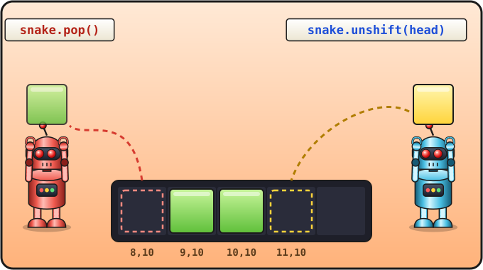

Lesson 8 of 16 ⏱ 45 minutes
The snake crawls
A cartoon is lots of pictures that quickly replace each other. Our game will work the same way: several times a second it moves the snake and draws a new picture. Today the snake comes to life!
- learn a clever way to move the snake: head forward, tail off;
- meet the array commands
unshiftandpop; - start a
setIntervaltimer; - learn to set the direction with the variables
dxanddy.
| 10 min | How a snake crawls: the idea on paper |
| 10 min | unshift and pop in the console |
| 15 min | The step function and the timer |
| 10 min | Experiments with direction and speed |
How a snake crawls
You could move every piece of the snake one by one, but there's a simpler way. Look: to make the snake crawl one cell, it's enough to:
- add a new head on the cell in front;
- remove the last piece of the tail.
Arrays have ready-made commands for this:
snake.unshift(something)— add an element to the start of the list (in place number 0);snake.pop()— remove the last element of the list.

snake.pop() takes away the tail (8,10), snake.unshift(head) puts a new head in front (11,10).snake.html, press F12 and type these one at a time:
snake.unshift({ x: 11, y: 10 });
snake.pop();
draw();
The snake moved one cell to the right! Repeat these three lines a couple more times (the ↑ arrow in the console brings back earlier commands).
Which way to go: dx and dy
The new head appears next to the old one. Exactly where depends on the direction. Let's make two variables:
dx— how many cells to move along x in one step;dy— how many cells to move along y.
| Direction | dx | dy |
|---|---|---|
| right → | 1 | 0 |
| left ← | -1 | 0 |
| down ↓ | 0 | 1 |
| up ↑ | 0 | -1 |
(Remember that on the screen y grows downwards? That's why "up" is -1.)
Then the new head is the old head plus the shift:
let head = { x: snake[0].x + dx, y: snake[0].y + dy };
One step of the game
Let's put it all into a function called step: make a new head, add it, remove the tail, redraw.
let snake = [
{ x: 10, y: 10 },
{ x: 9, y: 10 },
{ x: 8, y: 10 }
];
let apple = { x: 15, y: 10 };
let dx = 1;
let dy = 0;
function clearField() { ... } // no changes
function drawCell(x, y, color) { ... } // no changes
function draw() { ... } // no changes
function step() {
let head = { x: snake[0].x + dx, y: snake[0].y + dy };
snake.unshift(head);
snake.pop();
draw();
}
draw();
setInterval(step, 200);
{ ... } // no changes means the function stays the same as before. Don't delete it! If you're unsure, look at the whole file at the end of the lesson.
Save, refresh… The snake is crawling! 🎉
The timer
setInterval(step, 200);
setInterval means "call the function step again and again, every 200 milliseconds". A millisecond is one thousandth of a second, so 200 milliseconds is a fifth of a second. That means the snake takes 5 steps a second.
setInterval(step, 200), not setInterval(step(), 200). We don't call step ourselves — we hand it to the timer, so that the timer calls it when the time comes.
And then the snake crawls off the edge of the field and disappears… It hasn't vanished: its coordinates just became bigger than 19, and it's crawling somewhere outside the canvas. We'll fix that in the next lesson.
- Change
200to500, then to50. How does the speed change? - Make the snake crawl down. Which
dxanddydo you need? - Make the snake crawl left. Watch closely what happens right at the start. Why?
- What happens if
dx = 1anddy = 1at the same time? - ⭐ Comment out the line
snake.pop();(put//in front of it). What happens to the snake? Remember this — it'll come in handy when the snake starts eating apples!
dx = 1, dy = 0, speed 200, and the line snake.pop(); without the comment.
📄 The whole snake.html file after this lesson
<!DOCTYPE html>
<html>
<head>
<meta charset="utf-8">
<title>Snake</title>
</head>
<body>
<h1>Snake</h1>
<canvas id="game" width="400" height="400"></canvas>
<script>
let canvas = document.getElementById("game");
let ctx = canvas.getContext("2d");
let size = 20;
let cells = 20;
let snake = [
{ x: 10, y: 10 },
{ x: 9, y: 10 },
{ x: 8, y: 10 }
];
let apple = { x: 15, y: 10 };
let dx = 1;
let dy = 0;
function clearField() {
ctx.fillStyle = "black";
ctx.fillRect(0, 0, 400, 400);
}
function drawCell(x, y, color) {
ctx.fillStyle = color;
ctx.fillRect(x * size, y * size, size - 1, size - 1);
}
function draw() {
clearField();
drawCell(apple.x, apple.y, "red");
for (let i = 0; i < snake.length; i++) {
drawCell(snake[i].x, snake[i].y, "lime");
}
drawCell(snake[0].x, snake[0].y, "yellow");
}
function step() {
let head = { x: snake[0].x + dx, y: snake[0].y + dy };
snake.unshift(head);
snake.pop();
draw();
}
draw();
setInterval(step, 200);
</script>
</body>
</html>
Check yourself
- I can explain why adding a head and removing the tail is enough to move.
- I know what
unshiftandpopdo. - I understand that
setInterval(step, 200)callsstep5 times a second.